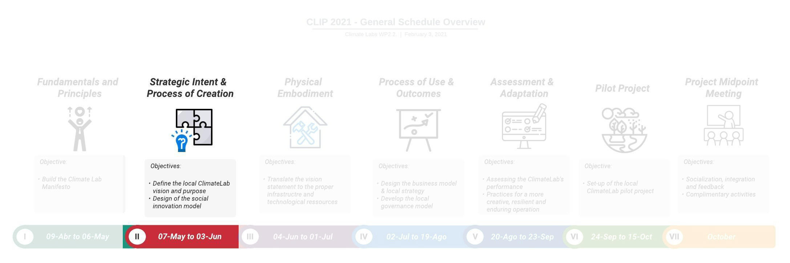

Sprint 2 Strategic Intent & Process of Creation
2.1 Sprint Opening

Welcome to the second sprint of the CLIP. In this sprint we are going to focus on the Strategic Intent & Process of Creation for the Climate Labs.
GOAL
This second sprint has two main goals:
First, to define your Climate Lab Vision
Second, to design the Social Innovation Process for your Climate Lab
Sprint dates: From April 30 to May 27 / 2021
A webinar will be held on April 30 to officially launch the Sprint II. It will be a synchronous session, so all CLT are expected to attend. In addition, a series of contents and activities are proposed to the CLT to be completed during the course of the sprint:
Firstly, you will find a summary video of the results from WP2.1.
Secondly, three conceptual videos are proposed to open the discussion on the importance of defining a strategic intent for your Climate Lab and, further, to develop your own social design process as the methodological framework for your Climate Lab.
Thirdly, two case experiences from members of the consortium are shared. This way we can learn a little more about the experience of each of our partners.
Next, you will find the links to the two (2) team workshops of this sprint. The workshops should be completed before the end of the sprint (May 27).
And finally, complementary readings are suggested for those who would like to further explore the topics addressed in this sprint.
NOTICE!
The full recording of the webinar can be watched below.
2.2 Conceptual Videos
2.2.1 Background on Strategic intent & Process of Creation
According to Moultrie et al. (2007), the design of an innovation environment “enables the development of unique capabilities, allows the reconfiguration of existing capabilities to changing demands, and supports synergies between complementary assets.” However, organizations rarely have explicit strategic goals underpinning the creation of their innovation lab initiatives. Instead, they often rely on single “champions” who are usually compelling sales persons whom believe passionately in the concept. Authors and practitioners agree that the existence of an underpinning strategic intent can prevent innovation labs or spaces to become vacuous spaces or merely innovation theaters with a superficial purpose.
Some of the commonly aspects to consider at the moment of defining the strategic intent of an innovation lab are (Osorio et al. 2019; Moultrie et al. 2007) :
| Criteria | Description |
|---|---|
| Strategic & Symbolic Goals | To support the mission of the organization or association innovation strategy |
| Ecosystem Approach | To generate added value for all the stakeholders involved, to create long-term engagement and identification with the lab. |
| Real Context World | To capture or resemble real life environments (through space, equipment or methodologies). |
| User’s Involvement | To involve users in the different phases of innovation cycle in which they can test, evaluate, contribute and co-create. |
| Culture and Community | To build an identity and to grow a community of users engaged and motivated with access to the laboratory. |
| Teamwork | To enhance teamwork in innovation, encouraging better communication (physical or virtual), encourage formal and informal social interaction and motivate staff. |
| Lifespan | To estimate the length of the project as a whole (short, mid or long-term). |
Beyond strategic reflection, it is also important to be aware of who will use the space and their needs, including the degree to which dedicated facilitation is required and ultimately, how the lab will be linked to the whole existing or desired innovation process (Magadley and Birdi 2009). Therefore, during the “process of creation”of an innovation lab one should be aware that, in practice, any work environment will evolve from the original intentions and will manifest the real work undertaken there.
Here we share with you some of the commonly aspects to take into account during the process of creation of an innovation lab (Osorio et al. 2019; Moultrie et al. 2007):
| Criteria | Description |
|---|---|
| Intended Innovation Processes | The intended role of the lab in supporting innovation processes: Opportunity Identification, Concept Creation, Concept Validation, Solution Development, Solution Deployment |
| Intended Creative Activities | The intended role of the lab in supporting creative activities: Search, synthesis, creation, prototyping or evaluation. |
| Users and facilitators | The intended users of the space: from occasional test users or students through to dedicated environments for co-located project teams. The degree of dedicated facilitation that the lab is intended to provide for the activities performed in/by the lab. |
| Available resources & constraints | The availability of physical, financial, human and technical resources. |
| Intended events | The type of “events” that are expected to be held in the space, ranging from one-off meetings, marathons, conferences or project work |
2.2.2 Summary of Results WP2.1 - Carola Calabuig
Professor Carola Calabuig from the Universitat Politècnica de València presents the summary of the results of WP2.1 of the Climate Labs project. In this video she makes a review of the methodology used, a synthesis of the main results and finally some reflections and recommendations for the CLTs for the remainder of the project.
2.2.3 Defining the Strategic Intent of your Climate Lab - Ferney Osorio
Struggling at building and sustaining a collective intent among stakeholders is one of the main challenges for teams in charge of leading an innovation lab. In this video, Ferney Osorio from Université de Lorraine and Universidad Nacional de Colombia explains the concept of strategic intent, why it should be the cornerstone for the design and implementation of an innovation lab initiative and how can be used in the case of the Climate Labs. The content of this video is based on (Osorio et al. 2019) and (Mantere and Sillince 2007).
The Spanish version of this video can be accessed here.
2.2.4 Fab Living Lab: A collaborative innovation approach to support creative and sustainable territories - Laurent Dupont
Laurent Dupont introduces the Lorraine Fab Living Lab® (LF2L) and how this platform supports collaborative innovation processes at the heart of the Université de Lorraine and the Grand Est Region in France. He develops the principles and motivations that led to the original conception of the Fab Living Lab approach, the framework on which the whole LF2L activity is orchestrated. To know more about this approach you can have a look to the paper (Dupont, Morel, and Pallot 2016).
2.2.5 Applying the Fab Living Lab approach in the renovation of the Museum-Aquarium of Nancy - Giovanny Arbelaez
Giovanny Arbelaez from Université de Lorraine gives a detailed example of the application of the Fab Living Lab Approach. In this case, Giovanny navigates the process of redesigning the museum experience by integrating interactive technologies supported by the Lorraine Fab Living Lab. To know more about this project you can have a look to the paper (Ten, Arbelaez-Garces, and Dupont 2020).
The Spanish version of this video can be accessed here.
2.3 Case Experiences
2.3.1 Pontifícia Universidade Católica do Rio Grande do Sul – Lucas Bonacina Roldan
The Pontifícia Universidade Católica do Rio Grande do Sul presents us with a case of success in social innovation and climate change. Lucas Bonacina Roldan shows the PUCRS Service Learning Program that works to promote entrepreneurship and social innovation.
2.3.2 Universidad del Quindío – Lina Marcela León & Faber Giraldo
The Universidad del Quindío presents a case of success in mitigation and adaptation to climate change. Professors Faber Giraldo Velásquez and Lina Marcela León Gallón, researchers of the project, accompany us.
2.4 Team Workshops 2 & 3
Here you can find for each University the links to both workshops for Sprint II:
Colombia
Universidad de Caldas: Workshop 2 - Workshop 3
Universidad del Quindio: Workshop 2 - Workshop 3
Universidad de Manizales: Workshop 2 - Workshop 3
Universidad Tecnológica de Pereira: Workshop 2 - Workshop 3
Corporacion Universitaria Minuto de Dios: Workshop 2 - Workshop 3
Mexico
Instituto Tecnológico y Estudios Superiores de Monterrey: Workshop 2 - Workshop 3
Universidad de Guadalajara: Workshop 2 - Workshop 3
Brazil
Pontifícia Universidade Católica do Rio Grande do Sul: Workshop 2 - Workshop 3
Pontifícia Universidade Católica Do Paraná: Workshop 2 - Workshop 3
Universidade Católica de Pernambuco: Workshop 2 - Workshop
2.5 Let us know your comments
In this section, you can put any comments/questions or share your thoughts and feedback about this sprint. To insert new text, use the “Edit” button.